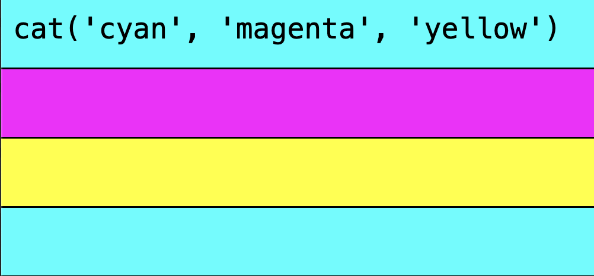

this is the first chapter of a series of posts about writing a tidal from scratch in JS. my goal is not to make this into a fully featured live coding system, like strudel, but rather to cut as many corners as possible, helping me to get a deeper insight into the nature of the ideas at play, trying to avoid getting lost in details. i've originally written these chapters on github, but i won't spoil it to you. without further ado, let's begin..
The core primitive of tidal are Patterns, which are essentially functions of time:
The above example is the most simple pattern I can think of: silence. It will always return an empty Array. The inputs a and b are the timespan we want to know about.
The above example doesn't really do much, so let's implement another pattern that repeats the same thing over and over:
This function will give us one object per whole number within the given time span. The object contains the timespan during it is active + some value.
Ideally, we'd want to choose the value to repeat, so let's make it a higher order function:
Higher order just means we have a function that returns a function. The outer function takes a value and returns the inner function, which is a Pattern.
Our returned object could be expressed as a typescript type like this:
declare type Hap<T> = { a: number; b: number; value: T };
With these Hap's, we can now define a Pattern like this:
declare type Pattern<T> = (a: number, b: number) => Hap<T>[];
Note that these typings are only a simplified version of what strudel or tidal use, but it's enough to get started thinking about Patterns.
Our repeat function is still a bit boring.. How about switching between different values?
The above pattern gives us an infinite timeline of snakes and dogs!
The implementation looks very similar to repeatValue, maybe we should generalize this loop:
With this, we could implement repeat and cat much more concisely!
So far, I've talked about a and b as a time span, but that's just a metaphor, because tidal is used for music (typically). But it's actually just a numerical range, so nothing stops us from interpreting Patterns as functions of space:
In this other kind of cat picture, we see each whole number cycle represented as a line, and the value of each `Hap` is interpreted as a color.
From now on, I'll use this type of visualization, as it makes more sense in a written guide.
This is the end of the first chapter!
I've decided to create a minimal REPL for each chapter, to to play around with the current state. Here it is:
The rendered output will query the pattern for 8 cycles. You can also see some logs in the browser console. So far it's rather boring, but we'll see how to manipulate patterns in the next one!